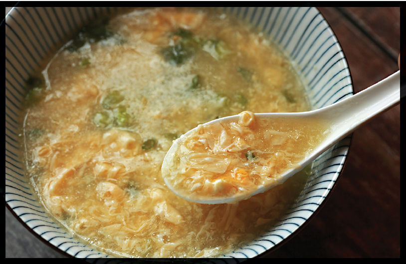

EGG DROP SOUP
|
Yield Serves 4 |
Active Time 15 minutes Total Time 30 minutes |
If you don’t have any Everyday Chicken and Ginger Stock on hand, start with 1½ quarts (1.5 l) of store-bought low-sodium chicken stock and simmer it for 15 minutes with 4 scallions, a few slices of ginger, a teaspoon of white peppercorns, and, optionally, a ham bone before straining it and proceeding as directed.
INGREDIENTS
1½ quarts (1.5 l) Everyday Chicken and Ginger Stock (here; see Note)
4 tablespoons (30 g) plus 1 teaspoon (2.5 g) cornstarch
Kosher salt and freshly ground white pepper
4 large eggs
2 scallions, chopped

For the longest time I really disliked egg drop soup, and it’s because I’d only ever had it from the Chinese buffets where it’d been sitting out all day on a steam table, slowly reducing into a viscous, mucus-like neon-yellow glop with rubbery bits of overcooked egg floating in it, along with the occasional odd sliced button mushroom.
The best egg drop soup, on the other hand, should have a clear, ever-so-slightly thickened broth with the intense flavor of chicken and egg, with the aromas of ginger, scallion, and white pepper. The eggs should form tender, silken curds, some large, some small, offering texture, sure, but predominantly flavor and richness to an otherwise extremely simple soup.
How do you get there? Well, two simple steps, and the first we’ve already accomplished: making a flavorful broth. The Everyday Chicken and Ginger Stock is perfect for this soup, though if you want a little more flavor, you could add a ham bone along with the chicken carcass to boost its meaty flavor and add a hint of smokiness.
The second step is adding the eggs. The egg flower, as it’s referred to in Chinese, is really simple to do. The key is to swirl the soup in a lazy vortex while slowly drizzling in the eggs, which are scrambled with a bit of cornstarch (the starch impedes protein connections, preventing the eggs from getting rubbery).
The best way to drizzle in the egg is to hold either two chopsticks or a fork across the top of a small bowl and drizzle the egg slowly through the tines. It’s essential that the soup be hot, but not boiling, as you do this. You want the egg to set into relatively large curds that you can then break up to the desired size by stirring more or less vigorously after you drizzle it.
DIRECTIONS
1 Bring the chicken stock to a bare simmer in a wok or saucepan. Combine 4 tablespoons (30 g) of the cornstarch with 4 tablespoons (60 ml) water in a small bowl and mix with a fork until homogenous. Whisk into the broth and bring to a simmer. Reduce the heat to low. Season with salt and white pepper to taste.
2 Whisk together the eggs, a pinch of salt, and the remaining teaspoon (2.5 g) cornstarch in a small bowl until homogenous. Swirl the soup once with a large spoon or ladle, then, holding a pair of chopsticks or the tines of a fork on the edge of the bowl, slowly drizzle the egg mixture into the soup, shaking the fork or chopsticks back and forth rapidly to flick the egg mixture as it drizzles. Allow the soup to sit for 15 seconds, then stir gently to break up the egg to the desired size. Sprinkle with scallions and serve.